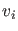
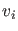
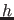
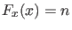
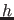
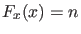
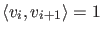
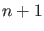

One option for choosing  is to select a hyperplane passing through
is to select a hyperplane passing through  that is
orthogonal to the vector :
that is
orthogonal to the vector :
So, the Newton iteration becomes:
Then one can prove that the Newton iteration for (2) will converge to a point  on the curve from provided that the stepsize  is sufficiently small and that the
curve is regular (rank ).
Having found the new point on the curve we need to compute the tangent vector at
that point:
on the curve from provided that the stepsize  is sufficiently small and that the
curve is regular (rank ).
Having found the new point on the curve we need to compute the tangent vector at
that point:
Furthermore the direction along the curve must be preserved:
, so we get the ()-dimensional appended system
Upon solving this system,  must be normalized.
must be normalized.